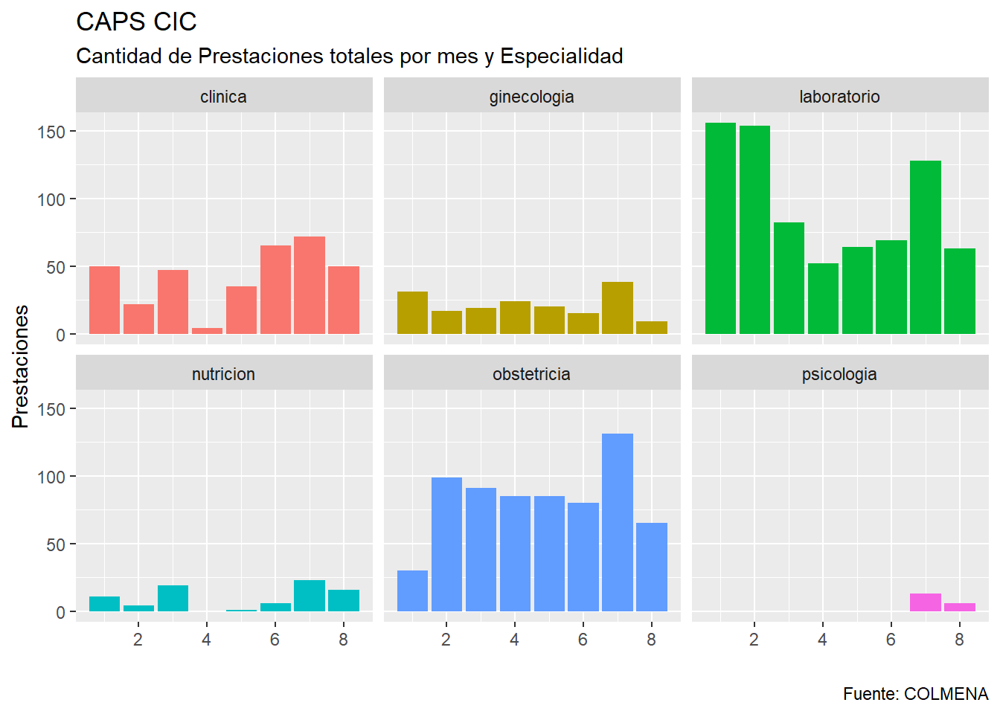
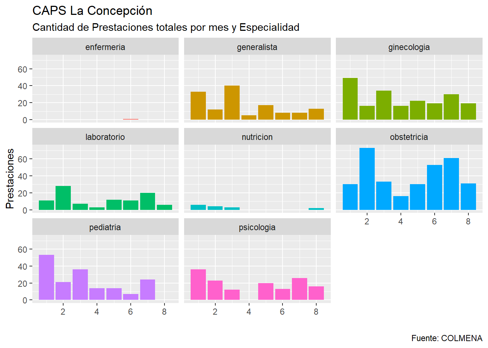
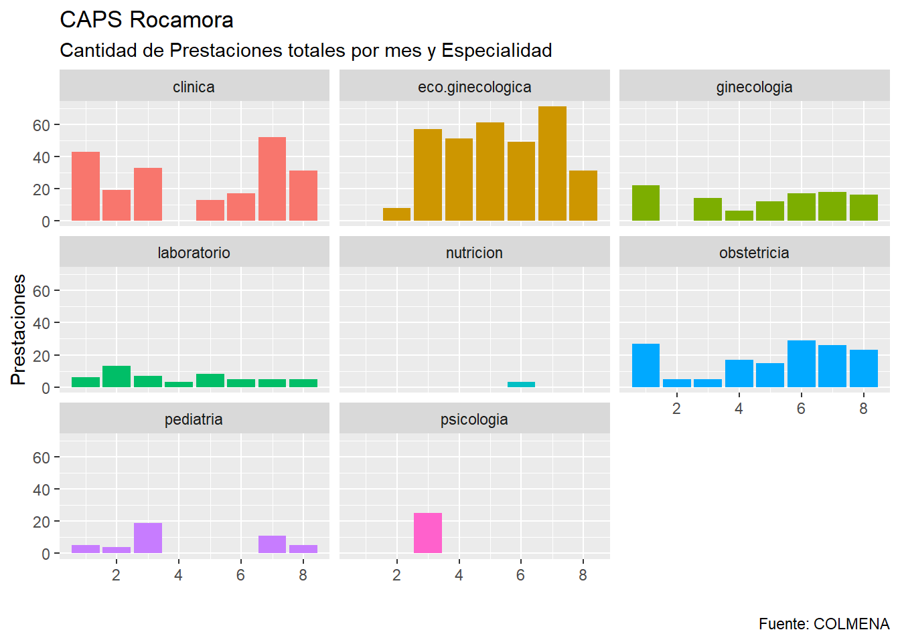
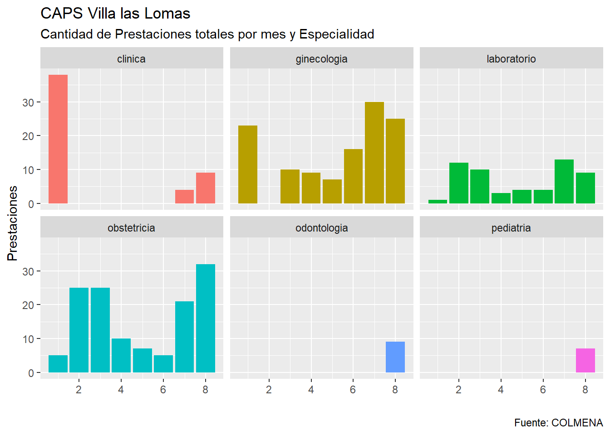
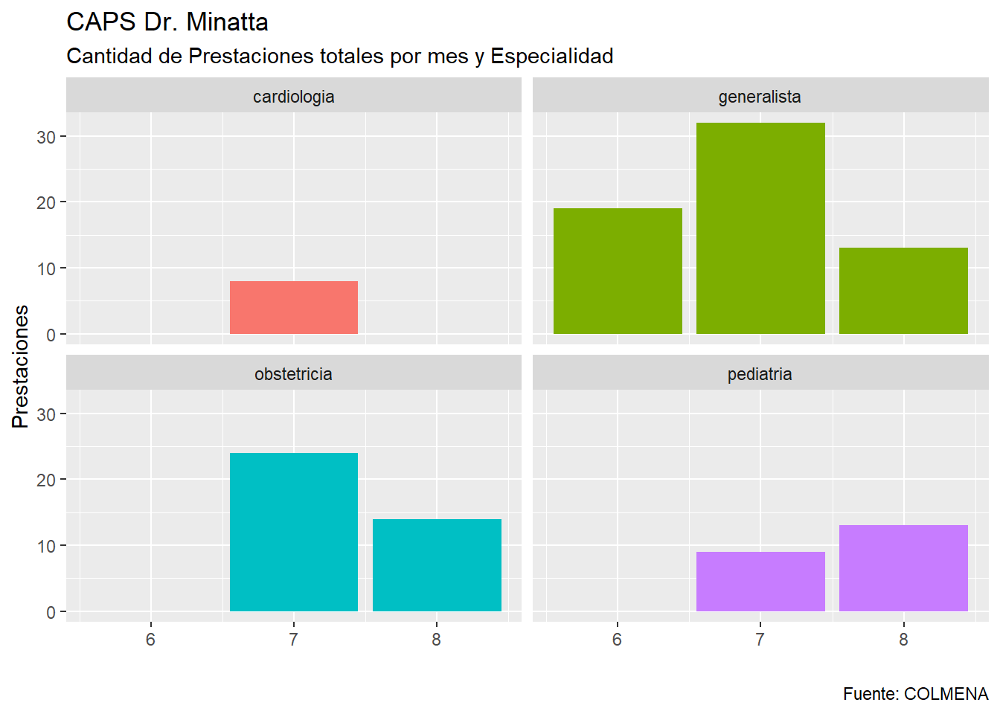

Los datos exportados por el sistema de administración de Historias Clínicas, COLMENA
Se analiza inicialmente la cantidad total de prestaciones realizadas en Consultorios según la Especialidad
A continuación se analizarán las cantidades de prestaciones realizadas en el CIC en base a la Especialidad y el total mensual

La siguiente nube de palabras resulta de la extraccion de los terminos más comunes en las Historias Clinicas de los usuarios que se atienden en el CAPS CIC
A continuación se analizarán las cantidades de prestaciones realizadas en el CAPS La Concepción en base a la Especialidad y el total mensual

La siguiente nube de palabras resulta de la extraccion de los terminos más comunes en las Historias Clinicas de los usuarios que se atienden en el CAPS La Concepción
A continuación se analizarán las cantidades de prestaciones realizadas en el CAPS Rocamora en base a la Especialidad y el total mensual

La siguiente nube de palabras resulta de la extraccion de los terminos más comunes en las Historias Clinicas de los usuarios que se atienden en el CAPS La Concepción
A continuación se analizarán las cantidades de prestaciones realizadas en el CAPS Villa las Lomas en base a la Especialidad y el total mensual

La siguiente nube de palabras resulta de la extraccion de los terminos más comunes en las Historias Clinicas de los usuarios que se atienden en el CAPS La Concepción
A continuación se analizarán las cantidades de prestaciones realizadas en el CAPS Dr. Minatta en base a la Especialidad y el total mensual

La siguiente nube de palabras resulta de la extraccion de los terminos más comunes en las Historias Clinicas de los usuarios que se atienden en el CAPS Dr. Minatta
La siguiente nube de palabras resulta de la extraccion de los terminos más comunes en las Historias Clinicas de los usuarios que se atienden en todos los CAPS discriminados por especialidad